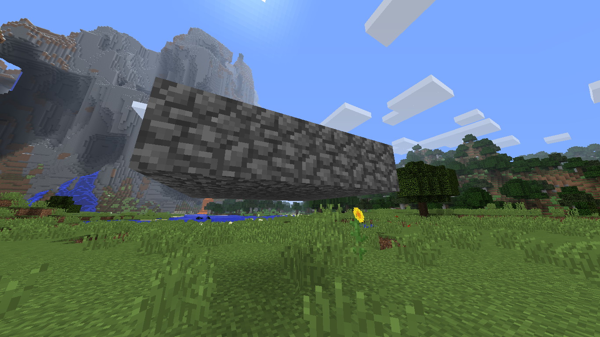
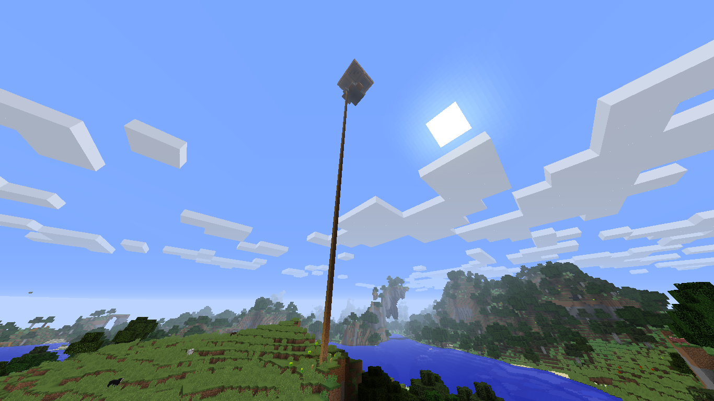
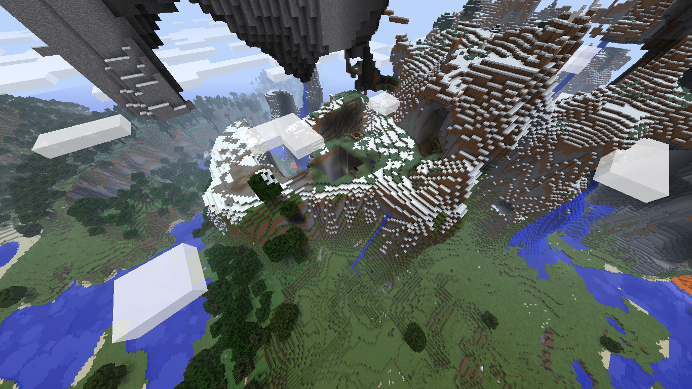

Documentation site for anomalous events observed on site 117
Description

Integer ut erat id risus tincidunt sagittis. Integer rutrum elit non ipsum gravida ornare. Ut quis felis vitae quam euismod scelerisque a a quam. Maecenas eget mauris id risus lacinia vestibulum. Aliquam non ullamcorper dolor. Nunc at lectus eros. Nam ipsum ligula, venenatis feugiat orci id, porta commodo sapien. Cras elementum leo in libero tincidunt accumsan. Praesent facilisis venenatis interdum.
Nullam eget consectetur diam. Nam risus lorem, pharetra nec pellentesque in, rutrum quis est. Duis efficitur iaculis nisi, a pharetra ex finibus et. Vivamus tristique augue ipsum, lacinia tempor nunc viverra in. Curabitur vulputate malesuada eros eget elementum. Integer sollicitudin nisl non nibh hendrerit ultrices. Class aptent taciti sociosqu ad litora torquent per conubia nostra, per inceptos himenaeos. Suspendisse pretium nec eros in tincidunt. Nullam ut viverra est, sit amet suscipit lorem.
Maecenas sagittis purus vel purus bibendum, id dictum metus commodo. Vestibulum nec augue lacus. Cras at laoreet felis. Pellentesque sem quam, euismod eu diam fringilla, maximus lobortis urna. Morbi at risus ac magna feugiat aliquet. Nullam fringilla, odio quis gravida laoreet, sem enim mattis eros, quis tristique sapien nisi eget leo. Ut ligula mauris, rutrum posuere pharetra id, ullamcorper id nulla.
Report

Class aptent taciti sociosqu ad litora torquent per conubia nostra, per inceptos himenaeos. In risus nibh, euismod ut placerat tincidunt, pretium volutpat tortor. Vestibulum laoreet, nunc nec tempus elementum, libero augue volutpat dui, vitae tincidunt dui erat sed lacus. Proin fringilla erat urna, vitae malesuada magna accumsan eu. Aliquam venenatis consequat nulla a gravida. Nulla et vulputate ligula. Phasellus sit amet finibus diam. Quisque id pharetra lectus, non euismod tortor. Suspendisse eget felis tempor, interdum metus lacinia, tristique felis.
Nunc porttitor diam at lacus dictum vestibulum. Mauris eu facilisis tortor. Aliquam hendrerit metus ut laoreet varius. Mauris ex lorem, tristique non aliquam vitae, sodales non justo. In posuere vehicula mattis. Nullam bibendum tellus nisl, ut finibus dolor molestie eget. Etiam semper dolor sapien, et pharetra felis gravida vitae. Nulla fermentum, metus eget scelerisque tincidunt, arcu augue interdum nisl, eu lobortis eros mi et tellus. Fusce nec lectus sit amet nunc ullamcorper placerat quis eget tellus. Aenean ullamcorper mauris bibendum, tincidunt justo et, lacinia ex. In sagittis commodo nulla, vitae dapibus leo blandit a. Vivamus quis nulla eu nibh sodales eleifend vitae rutrum diam. Maecenas rutrum quis turpis at venenatis. Integer erat orci, bibendum nec est vitae, dictum interdum neque. Vestibulum ante ipsum primis in faucibus orci luctus et ultrices posuere cubilia Curae;
Sed a ornare urna, nec accumsan augue. Donec ullamcorper felis pretium, tincidunt metus id, ornare elit. Sed sed eros varius sapien tincidunt porttitor ut eget mi. In sagittis turpis ut purus ullamcorper, at aliquet augue sollicitudin. In eu laoreet mauris. Curabitur quis arcu a lorem laoreet fringilla. Maecenas posuere libero a tincidunt mollis. Curabitur tellus nulla, fermentum ullamcorper maximus quis, accumsan vel metus. Nunc volutpat leo et elit varius congue ac non libero. Phasellus id mattis nisl. Fusce id euismod est. Fusce eget cursus lorem.
Containment

Sed et aliquet lacus. Duis at est egestas, malesuada arcu eu, consectetur ex. Integer ut sodales urna. Sed id erat pharetra, fermentum nulla eu, consequat sem. Orci varius natoque penatibus et magnis dis parturient montes, nascetur ridiculus mus. Curabitur a nulla eget elit facilisis porta. Mauris venenatis enim vel porta vestibulum. Integer eu mauris ipsum. Pellentesque volutpat egestas vulputate. Morbi laoreet tempor est. Vestibulum ac venenatis nisl, vestibulum sodales tortor. Morbi faucibus nunc et orci tristique, in faucibus neque tristique. Nam elementum ultrices lacus, rhoncus lacinia elit congue quis. Sed sit amet felis ac ante vestibulum aliquam. Nulla accumsan in turpis sed feugiat. Nullam euismod suscipit ipsum pharetra venenatis.
Vestibulum facilisis porttitor neque, commodo dictum justo. Aliquam rutrum justo sed facilisis pellentesque. Nam varius iaculis justo at suscipit. Aliquam ultrices fermentum arcu, sit amet lacinia ante ornare vel. Quisque felis nisi, rutrum et rhoncus sit amet, tincidunt et ex. Vivamus aliquam a dui eget commodo. Suspendisse commodo tincidunt facilisis.
Aenean libero nisl, placerat sed gravida ut, gravida elementum sem. Proin vehicula scelerisque dolor, id mattis dui. Etiam id enim lorem. Duis interdum porta eros, et malesuada neque aliquet non. Vivamus nibh nulla, venenatis nec scelerisque eu, ultricies ac odio. Phasellus vitae placerat velit, ac pellentesque massa. Donec ac urna ut enim euismod vestibulum non a nisi. Morbi massa eros, sollicitudin eu nulla sed, accumsan accumsan turpis. Quisque nec elit at ligula elementum sollicitudin ac vel nunc. Vestibulum elit neque, tempus nec condimentum sed, venenatis vel dolor. Sed molestie purus neque, in consequat enim sodales eu. Vivamus vulputate mattis risus sed molestie.